A name and its current value are different things
To model mutation, separate the environment, which resolves a name to a location, from the store, which resolves a location to its current value. In this chapter write ρ : Name → Location and M : Location → Value. HW3 uses σ for its environment and M for memory; lecture 8 uses different letters. Follow the roles, not only the Greek symbols.

View Mermaid source
flowchart LR
accTitle: A variable lookup has two stages
accDescr: The environment maps x to location zero, and memory maps that location to a value. Assignment changes memory only.
X["Name x"] -->|"environment lookup"| L["Location 0"]
L -->|"memory before"| V["Value 4"]
L -->|"memory after x := 6"| W["Value 6"]
The evaluator now has the conceptual type environment -> memory -> expression -> value * memory. Every subexpression may change memory, so a caller needs both its value and its resulting store.
Thread the latest memory
To evaluate e1 + e2 left to right, evaluate e1 with M0, producing (v1, M1). Evaluate e2 with M1, producing (v2, M2). Return the arithmetic result with M2. Reusing M0 loses the effects of the left expression.

View Mermaid source
flowchart TD
accTitle: A step-by-step reasoning flow
accDescr: Each arrow passes the result of one reasoning step to the next.
N0["e1 with M0<br/>Produce v1 and M1."]
N1["e2 with M1<br/>Observe all effects from e1; produce v2<br/>and M2."]
N0 --> N1
N2["Combine v1 and v2<br/>Check the operation’s required value<br/>shapes."]
N1 --> N2
N3["Return result with M2<br/>Preserve the latest state."]
N2 --> N3
The same discipline applies to sequences, conditionals, loop conditions, argument lists, and record initializers. Even a loop condition that becomes false can have changed memory; return that final condition store.
Starting with x at location 0 containing 4, evaluate x + 2, store 6 at location 0, then read x as 6.
Explicit and implicit references
In explicit-reference languages, allocating a cell, reading it, and writing it have separate operations. OCaml references illustrate the idea:
let counter = ref 4
let () = counter := !counter + 2
let result = !counter
An implicit-reference language makes variable bindings allocate cells and variable lookup read them automatically. B uses this model for variable bindings. Its assignment evaluates to the assigned value; OCaml’s := evaluates to unit. Translating syntax mechanically between these languages will miss that difference.
Call by value and call by reference
| Question | Call by value | Call by reference |
|---|---|---|
| What is passed? | The evaluated argument value | The caller’s existing variable location |
| Parameter binding | Fresh location initialized with the value | Same location as the caller’s variable |
| Assigning to a scalar parameter | Updates the local cell | Updates the caller’s cell |
| Can two parameters alias? | Fresh scalar parameter cells do not | Yes, when passed the same variable |
If a initially contains 4, calling a procedure that assigns p := 9 by value leaves a = 4; by reference it leaves a = 9. With record values, copying the value can still copy field addresses and preserve shared mutable fields. Call by value does not promise a deep copy of reachable memory.
The homework connection
HW3 makes store threading explicit. It also has an environment containing either location bindings or procedure bindings: procedures are not general stored values in B. Calls execute under the procedure’s captured environment, while argument values or argument locations come from the caller.
Check your understanding
Why must fresh parameter locations be pairwise distinct, not merely absent from the incoming store?
Reveal the reasoning
Two newly allocated parameters could otherwise receive the same previously unused location and accidentally alias. Allocate successively, updating the allocator state, or otherwise ensure all fresh locations are distinct.
Read alongside: lecture 8, PDF pp. 14–16, 25–26, 30–38, HW3, pp. 2–4, English book, chapter 6.